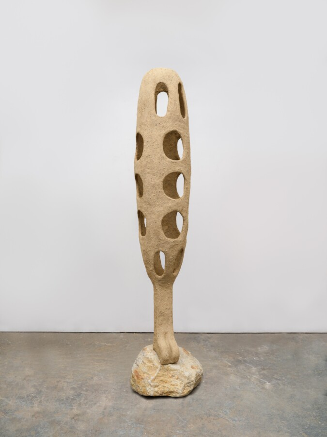

Artist Talk: Oren Pinhassi and Janine Mileaf
On the occasion of his exhibition opening at The Arts Club of Chicago, Brooklyn-based artist Oren Pinhassi joins Janine Mileaf (Arts Club Executive Director and Chief Curator) in a conversation about his work and motivations.